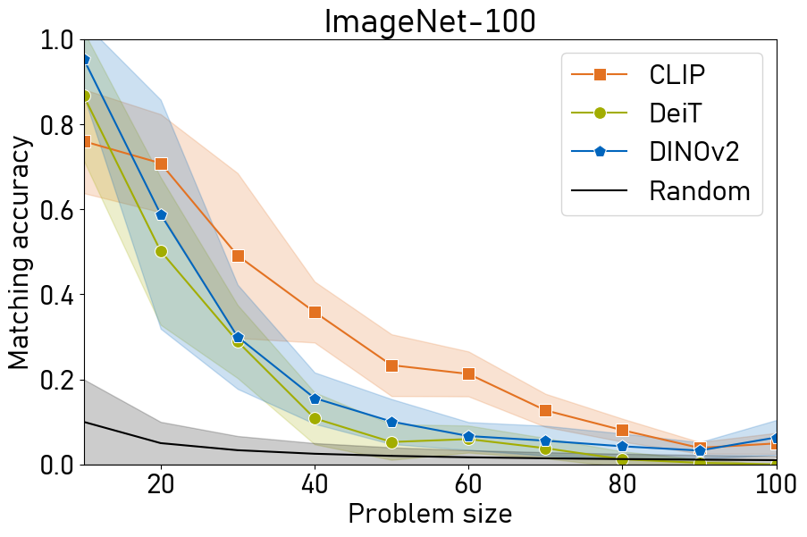
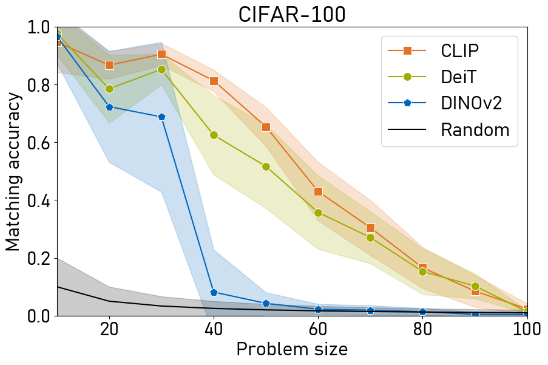

The platonic representation hypothesis suggests that vision and language embeddings become more homogeneous as model and dataset sizes increase. In particular, pairwise distances within each modality become more similar. This suggests that as foundation models mature, it may become possible to match vision and language embeddings in a fully unsupervised fashion, i.e., without parallel data. We present the first study towards this prospect, and investigate conformity of existing vision and language foundation models in the context of "blind" matching. First, we formulate unsupervised matching as a quadratic assignment problem and introduce a novel heuristic that outperforms previous solvers. We also develop a technique to find optimal matching problems, for which a non-trivial match is very likely. Second, we conduct an extensive study deploying a range of vision and language models on four datasets. Our analysis reveals that for many problem instances, vision and language representations can be indeed matched without supervision. This finding opens possibility for exciting applications embedding semantic knowledge into other modalities. As a showcase, we demonstrate a proof-of-concept unsupervised classifier, which achieves non-trivial classification accuracy without any image-text annotation.
Overview
Vision-Language models need a lot of paired training data. Can we match vision and language without any supervision? Our work shows that it could be indeed feasible.
Overall, our contributions are:
The formulation of vision-language matching as a quadratic assignment problem (QAP)
A specialized memory-efficient QAP solver
An extensive study showing the feasibility of non-trivial vision-language matching without any parallel data
The platonic representation hypothesis
The main motivation for our approach comes from the platonic representation hypothesis. The hypothesis postulates that pairwise similarities in self-supervised vision and language models become closer by scaling model and dataset size. In our example, for both large language and vision models trained on enough data, the cat is closer to the dog than to the airplane in the embedding space.
Is matched data more similar?
First, we investigate how the alignment measures change when the ground-truth pairing is distorted. That is, we shuffle a subset of the data points in one modality and compute the alignment. We consider the Mutual k-NN, centered kernel alignment (CKA), and the Gromov-Wasserstein distance on several classification and image/caption datasets. We observe that the average alignment decreases strictly monotonically so that the ground-truth pairing achieves the optimal alignment. This shows that these similarity measures are practical heuristics for finding a matching.
Interestingly, we observed the same qualitative behavior for randomly initialized vision and language networks. We analyze and discuss this in more detail in Appendix C of our paper.
Blind matching
Since the alignment tends to be better for correctly paired representations, we formulate the matching as an optimization problem, where we search for the optimal permutation matrix $\mathbf{P}^*$ such that the alignment $l(\mathbf{X}_{ik}, \mathbf{Y}_{jl})$ is maximal (or the distance is minimal for the Gromov-Wasserstein distance):
\(
\DeclareMathOperator*{\argmin}{arg\,min}
\DeclareMathOperator*{\argmax}{arg\,max}
\)
$$
\mathbf{P}^* \in \argmin_{\mathbf{P} \in \mathcal{P}_N} \quad \sum_{i, j, k, l = 1}^{N} l\left(\mathbf{X}_{i k}, \mathbf{Y}_{j l}\right) \mathbf{P}_{i j} \mathbf{P}_{k l}
$$
$$
\mathcal{P}_N = \{\mathbf{P} \mid \mathbf{P} \in \{0, 1\}^{N \times N}, \mathbf{P} \mathbf{1} = \mathbf{1}, \mathbf{P}^T \mathbf{1} = \mathbf{1}\}.
$$
Here, $\mathbf{X}_{ik}$ is the similarity of the i-th and k-th vision embeddings and accordingly $\mathbf{Y}$ is the pairwise similarity matrix in the language space. Subject to a specific instantiation of $l(\cdot, \cdot)$, this formulation is general and can accommodate many existing distance (and similarity) measures. This problem is a quadratic assignment problem (QAP), which is in general NP-hard. Existing solvers already fail for $N \geq 30$, meaning that a 30-class problem cannot be solved.
We extend the Hahn-Grant heuristic to solve the QAP with the following key extensions:
A primal heuristic to find primal solutions
Improved memory complexity from $O(N^4)$ to $O(N^3)$
Faster linear assignment solver.
With this solver, we find better primal solutions with tighter bounds also for larger problem sizes (optimal up to $N = 40$).
Experiments
We evaluate how many classes can be matched correctly (=matching accuracy) in the small-scale ($N=10$) and larger-scale ($10 \leq N \leq 100$) setting.
Small-scale matching
We evaluate a total of 33 vision models and 27 language models on CIFAR-10 and CINIC-10 (we keep the image resolution from ImageNet). We observe that most models perform better than 10% accuracy, which is the baseline for random permutations. Furthermore, pre-training seems to be more important than model size.
We also find that the Gromov-Wasserstein distance is more useful for matching than Mutual k-NN and CKA.
Larger-scale matching
We find that some classes are represented very differently in vision and language models. Therefore, we introduce a method to find subsets of classes that can be matched well. To do this, we optimize for a subset $\mathbf{s}^*$ of classes such that their alignment (=how similar their pairwise similarities are) is maximized:
$$
\mathbf{s}^* \in \argmax_{\mathbf{s}} \sum_{i, j = 1}^{N} l\left(\mathbf{X}_{i j}, \mathbf{Y}_{i j}\right) \mathbf{s}_{i} \mathbf{s}_{j}
$$
$$
\text{s.t.}\quad \mathbf{s} \in \{0, 1\}^{L} \:\:\text{and}\:\: \mathbf{s}^T \mathbf{1} = N.
$$
We evaluate the models on ImageNet-100 and CIFAR-100. We observe that all models have high accuracy for small problem sizes, and that performance drops for larger problem sizes. Thus, some classes are represented similarly and other classes disrupt the matching leading to the steep drop in accuracy. In general, CLIP performs better than DeiT and DINOv2 and on CIFAR-100, DINOv2 performs much worse than the other models. We suspect that some fine-grained classes are represented differently by vision and language models, but explicit language supervision during training may help to align them.


Application: Unsupervised classifiers
Using our matching algorithm, we can find pairings between a set of vision and language embeddings that represent the same objects. We can combine this with any clustering algorithm to build unsupervised classifiers.
Given a classification dataset, we have a set of $N$ classes and for each class a couple of images. We apply a language model to embed each of the classes and cluster the images into $N$ clusters. Finally, we use our matching algorithm to find the correspondence between cluster centers and language embeddings. This returns an assignment of clusters to classes which can be propagated back to each sample in that class.
We achieve non-trivial accuracies for all vision and language models considered and a top accuracy of 51.5% for DINOv2 with All-Roberta-large-v1. While this is far from the supervised state-of-the-art, this is the first instance of fully unsupervised image classification.
Discussion
Can we match vision and language without paired data?
Many classes can be matched without supervision.
Some classes have different representations in vision and language, hence cannot be matched.
Can we match arbitrary embeddings?
Not every embedding can be matched with existing models.
Some concepts appear only in one modality, e.g. “freedom of speech”. Thus, explicit supervision is required.
The blind matching does not scale to very large problems yet ($N \gg 100$).
Which vision model can be matched best?
DINOv2 is better on broad concepts.
CLIP and DeiT encode fine-grained objects more consistently.
BibTeX
@inproceedings{schnaus2025it,
title={It’s a (Blind) Match! Towards Vision-Language Correspondence without Parallel Data},
author={Schnaus, Dominik and Araslanov, Nikita and Cremers, Daniel},
booktitle = {Proceedings of the IEEE/CVF Conference on Computer Vision and Pattern Recognition},
year={2025}
}